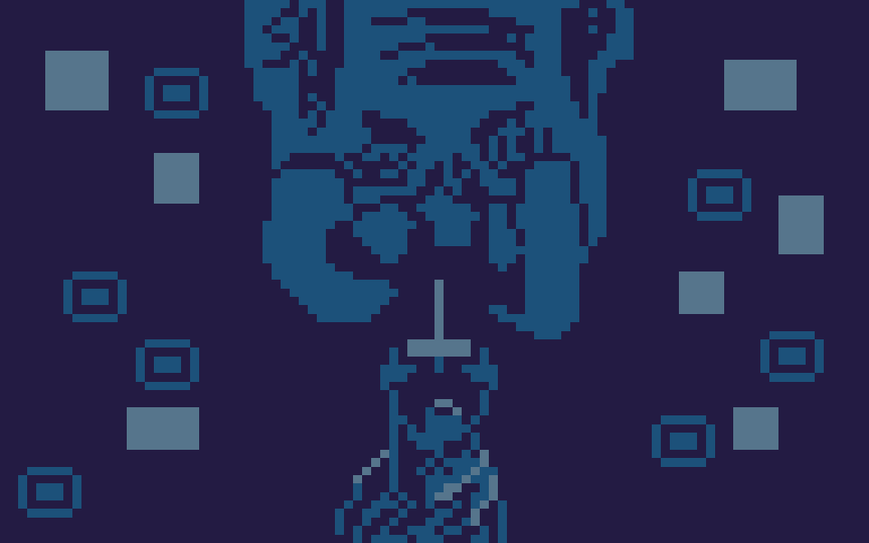

Olá meu nome é Davi, sou estudante de jogos digitais pela universidade SENAC. Tenho um total de 7 jogos postados. Sou desevolvedor genérico (trabalho em todas as áreas da produção de um jogo).
Habilidades Técnicas
Experiência
Jogos
O "Café!? foi meu primeiro jogo feito, eu está ainda apredendo a fazer cenários."
Foi feito em um "gameJam" do SENAC onde tivemos um tempo menor de três dias para cria-lo. É o meu melhor trabalho de cenário feito.
Aqui foi o primeiro jogo que mudo o estilo de arte. Aprendi um pouco de direção de arte, deixando a arte coesa padronizada.
Aqui sai do padrão de fazer cenário e fiz a personagem principal do jogo, desde o concept até o 3D animado.
Aqui tive outra experiência fora do padrão. Realizei pela primeira vez a função de programador, dentro da Godot.
O projeto Chinelada foi um projeto feito sozinho, para aprender mais sobre a godot.
Foi a minha primeira "gameJam" dedicado ao Godot (wildJam) que participo. Apesar do tempo de uma semana, eu acabei trabalhando de forma efeitiva no projeto, pelo tempo de 2 dias.